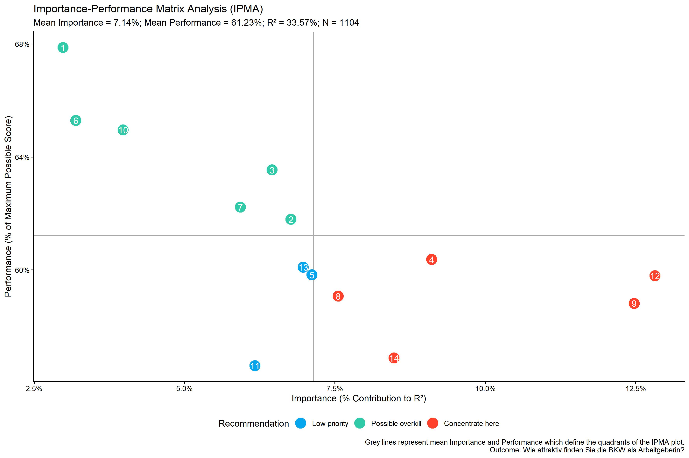
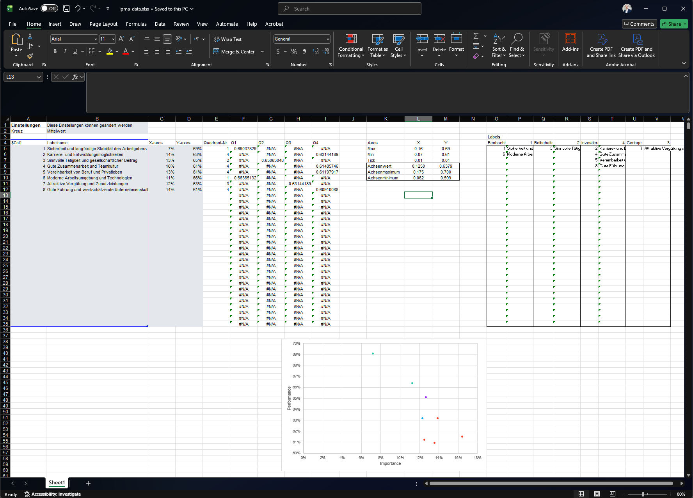
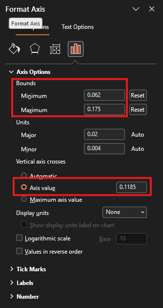
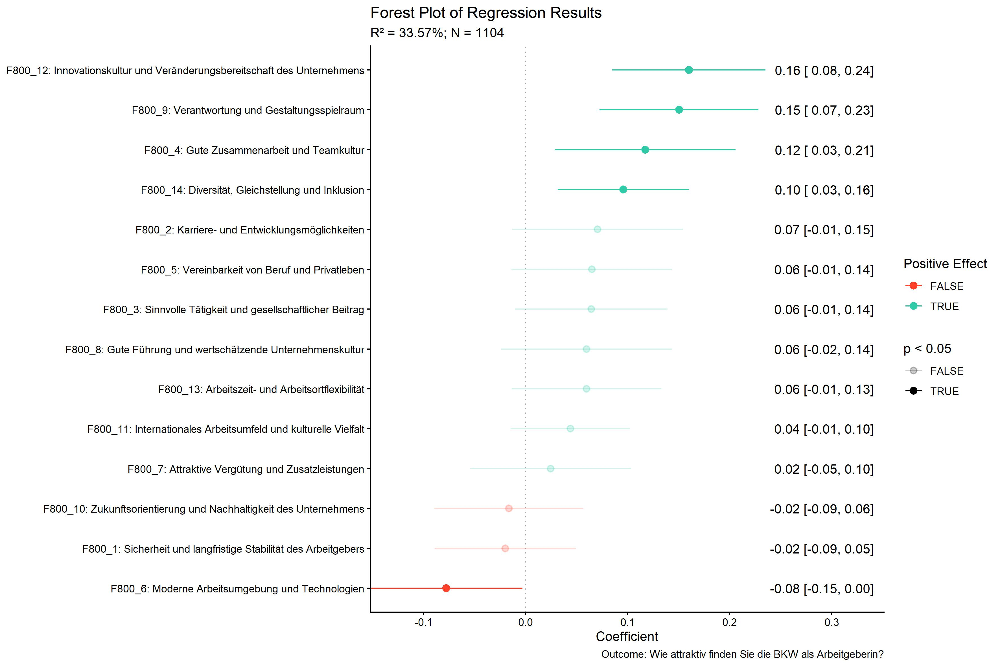
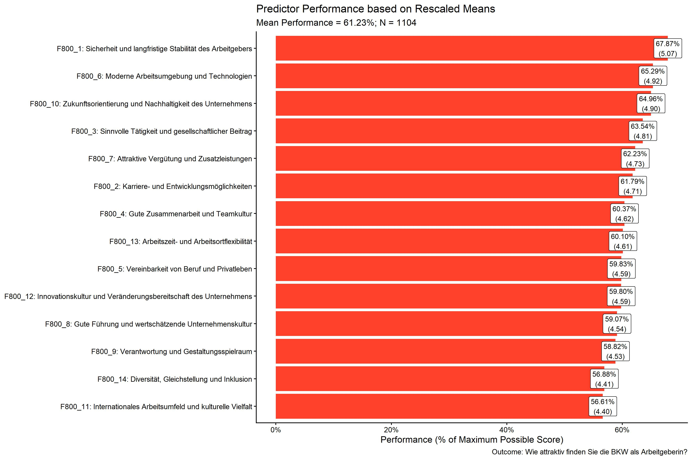

The goal of YouAnalyser is to provide Analytics Partners of YouGov DACH with a convenient and standardized way to perform core analyses on survey data, such as Key Driver Analysis (KDA). The package includes functions for data preprocessing, exploratory data analysis (EDA), and KDA (more to come), all designed to work seamlessly with survey data in the haven::labelled() format. By using YouAnalyser, you can save time and ensure consistency in your analyses across different projects.
Installation
You can install the development version of YouAnalyser from GitHub with:
# install.packages("pak")
pak::pak("EGuizarRosales/YouAnalyser")Key Driver Analysis (KDA)
Basic Example
This is a basic example which shows you how to conduct a End-2-End Key Driver Analysis using the YouAnalyser package. For a more detailed walkthrough, please refer to the vignettes included in the package (use e.g. vignette("kda", package = "YouAnalyser")), which provide step-by-step guides on how to use the various functions for KDA.
library(YouAnalyser)
library(haven)
res <- kda_regression(
data = bkw_processed,
outcome = "F600",
predictors = paste0("F800_", 1:8),
diagnostics = TRUE,
importance_method = "auto"
)res is a list containing the results of the KDA, including the fitted regression model, variable importance and performance measures, and plots. The most important outcome is the “Importance Performance Map Analysis” (IPMA) plot, which can be accessed like this:
res$plots$ipma_scatterPlot$pCharts and Reporting
If you would like to save a plot, you can use two convenience functions:
-
ya_choose_file_path(): This function will open a dialog box that allows you to choose a directory where you would like to save the plot. You only need to additionally provide a file name ("ipma_plot.jpeg"in the example below), and the function will take care of the rest. -
ya_save_plot(): This function allows you to save a plot to a specified file path, with options to set the width and height (in centimeters) of the saved plot.
file_path <- ya_choose_file_path("ipma_plot.jpeg")
ya_save_plot(
plot = res$plots$ipma_scatterPlot$p,
file_path = file_path,
width = 30,
height = 20
)This will result in the following plot being saved to your chosen directory:

The data visualized in this plot can be accessed like this:
res$plots$ipma_scatterPlot$d
#> # A tibble: 8 × 12
#> predictor_nr predictor label recommendation Importance_Raw Importance_Ratio
#> <int> <chr> <chr> <fct> <dbl> <dbl>
#> 1 1 F800_1 Sicherh… Possible over… 0.0259 0.0722
#> 2 2 F800_2 Karrier… Concentrate h… 0.0498 0.139
#> 3 3 F800_3 Sinnvol… Keep up the g… 0.0456 0.127
#> 4 4 F800_4 Gute Zu… Concentrate h… 0.0590 0.165
#> 5 5 F800_5 Vereinb… Concentrate h… 0.0449 0.125
#> 6 6 F800_6 Moderne… Possible over… 0.0405 0.113
#> 7 7 F800_7 Attrakt… Low priority 0.0442 0.123
#> 8 8 F800_8 Gute Fü… Concentrate h… 0.0487 0.136
#> # ℹ 6 more variables: Importance_Percent <dbl>, Importance_Rank <dbl>,
#> # Performance_Raw <dbl>, Performance_Ratio <dbl>, Performance_Percent <dbl>,
#> # Performance_Rank <int>We can also export this data to an Excel file that can be used for reporting in a PowerPoint report:
file_path <- ya_choose_file_path("ipma_data.xlsx")
ya_save_data_for_chart(
ipma_scatterPlot_data = res$plots$ipma_scatterPlot$d,
file_path = file_path
)This will result in a file that looks like this when opened in Excel:

This file has the right structure and contains all the information needed to update a pre-formatted PowerPoint template that you can use for reporting. You can copy the PowerPoint template to your desired location using the kda_copy_pptx_template() function:
file_path <- ya_choose_file_path("ipma_chart.pptx")
kda_copy_pptx_template(file_path)Follow these steps to update the PowerPoint template with the exported data:
- Open the ipma data saved in the Excel, i.e.
ipma_data.xlsxin this example. - Select the data in the grey box, i.e. A5:D12 in this example, and copy it (Ctrl + C).
- Open the PowerPoint template, i.e.
ipma_chart.pptxin this example. - Go to the slide with the IPMA chart, right-click on the chart, and select “Edit Data” > “Edit Data in Excel”. This will open the “Chart in Microsoft PowerPoint” window, which looks just like Excel.
- In the “Chart in Microsoft PowerPoint” window, select the Cell A5, right-click, and paste values only (Ctrl + Shift + V). The chart in the PowerPoint will automatically update based on the pasted data. You can close the “Chart in Microsoft PowerPoint” window after pasting the data.
- In the IPMA chart, we need to update part of the chart that is displayed as well as the cross defining the quadrants. For this, arrange the PowerPoint (
ipma_chart.pptx) and the Excel (ipma_data.xlsx) window side by side.- Double-click on the horizontal line in the PowerPoint chart. This will open the “Format Axis” pane on the right-hand-side (see screenshot below). Copy and paste (Ctrl + C and Ctrl + V) the value in Cell L10 of the Excel sheet (X-Achsenminimum) to the “Bounds: Minimum” field in the “Format Axis” pane. Now copy and paste the value in Cell L9 (X-Achsenmaximum) to the “Bounds: Maximum” field in the “Format Axis” pane. Finally, copy and paste the value in Cell L8 (X-Achsenwert) to the “Vertical axis crosses: Axis value” field in the “Format Axis” pane.
- Double-click on the vertical line in the PowerPoint chart. This will open the “Format Axis” pane on the right-hand-side. Copy and paste (Ctrl + C and Ctrl + V) the value in Cell M10 of the Excel sheet (Y-Achsenminimum) to the “Bounds: Minimum” field in the “Format Axis” pane. Now copy and paste the value in Cell M9 (Y-Achsenmaximum) to the “Bounds: Maximum” field in the “Format Axis” pane. Finally, copy and paste the value in Cell M8 (Y-Achsenwert) to the “Horizontal axis crosses: Axis value” field in the “Format Axis” pane.
- Update the right-hand side legend of the chart with the item numbers and statements. Use the information summarised in the Excel file in O5:V35 to do this.

Additional Outputs
There are a lot more plots and outputs available from res, so you are encouraged to explore the object and check out the vignettes for more details on how to use the package for KDA. Below you find all available plots in the res object:
res$plots$diagnostics_correlation

res$plots$diagnostics_model

res$plots$model_forestPlot

res$plots$importance_barPlot

res$plots$performance_barPlot
